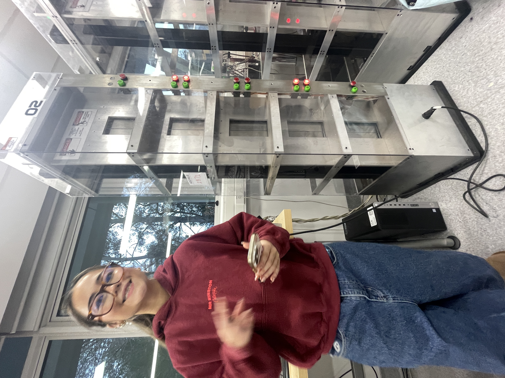

Designed and implemented a PLC-based control system for a scale model five-storey elevator rig, programmed in both Ladder Logic and Structured Text on an Omron PLC. The system covers encoder calibration, PI motor control, door interlock logic, a floor scheduling algorithm, and a lighting feedback system — all structured around two finite state machines.
FLOOR_N_LOWER and FLOOR_N_UPPER encoder values for each of the five floors. These are averaged into a FLOOR_N_AVERAGE position. Calibration runs once, giving the controller an accurate absolute position reference before any requests are serviced.
Calibration_Mode, StoppedState, DoorsMoving, and Moving. State transitions are gated by conditions — the car can't move with doors open, doors won't open unless the car is stationary at a floor.
Priority_Array[i] (indexed by floor and direction); interior cab buttons feed into Cab_Request[i]. A for loop scans from floor 5 downward to service "down" requests, then another scans from floor 1 upward for "up" requests — replicating the scan-cycle logic real elevators use. A case statement clears requests when CurrentFloor matches TargetFloor.
The scheduler exhibited a failure mode when opposing-direction requests arrived simultaneously. In some cases, the carriage would prioritise the opposing direction rather than continuing in its current travel direction. This was traced back to Boolean flags not consistently clearing at the correct point within the loop logic. While the scheduling approach functioned in principle, certain edge cases were not fully captured by the case statements.
A major challenge was inconsistency between physical elevator rigs. PI gains tuned on one rig did not transfer reliably to another, requiring repeated re-tuning due to differences in carriage behaviour. This introduced uncertainty during debugging, as it was not always immediately clear whether unexpected behaviour originated from the control logic or the hardware itself.
One of the strongest parts of this project was the level of trust within our team. Having confidence in each other’s ability to contribute made the process feel genuinely collaborative and allowed us to focus on solving problems rather than constantly managing progress. Working this way made the challenges far more enjoyable to work through.
Technically, the project reinforced how different real systems are from idealised ones. A controller that works under one set of conditions does not necessarily behave the same under slightly different hardware conditions. The experience highlighted the importance of designing for variability, testing thoroughly, and recognising that debugging often involves questioning both the code and the physical system simultaneously.